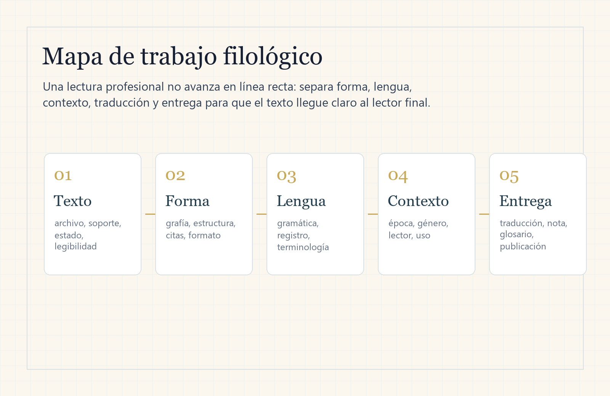

Translation and editing
Academic, business and editorial texts, with agreed terminology and formatting.
Per word or project
Applied Philology Studio
Precision Across Languages
Translation, localization and linguistic documentation with contextual reading, editorial judgment and clear deliverables.
Applied philology
We review the source text, structure, terminology, context and deliverables before agreeing the scope and level of review.

Language services
Every project is quoted according to language pair, word count, file format, deadline, review level, confidentiality and specialization.
Academic, business and editorial texts, with agreed terminology and formatting.
Per word or projectInterface text, landing pages, product descriptions and help content adapted to their context of use.
Per screen or batchAbstracts, terminology and language revision, without replacing the author’s work or guaranteeing publication.
Agreed scopeShort excerpts with clearly identified sources, transliteration, translation and commentary.
Educational useYour project
We review languages, audience, length and format.
We agree the price, deadline, files and revisions in writing.
We clarify terminology and context with you.
You receive the agreed files and relevant notes.
Historical texts
This service supports study, annotation, transliteration and public education. Each project identifies its source, edition, transliteration convention and any specialist review required.

Portfolio
Human translations of public-domain scientific texts, complete and faithful to the original, as examples of specialized work by field.
"On the Antiseptic Principle of the Practice of Surgery." Complete article, with the author's footnotes, rendered into Spanish.
Download PDFThree passages from the Dream Pool Essays —petroleum, the magnetic compass and movable-type printing— with the Chinese source and translator's notes, rendered into Spanish.
Download PDFFoundational passages by F. de Saussure (Cours, 1916) and A. Einstein (1905), translated into Spanish with terminological precision.
Download PDFAbout the studio
Scriptorium is led by Josue Puglla in Ecuador. We work on translation, localization and educational materials, with attention to the reader and the intended use of each text.
Each project's feasibility is confirmed before engagement. Training and professional scope (Spanish).
Testimonials
Sample examples to show the format — replace with real client reviews.
"Delivered my thesis chapter with the exact terminology and the formatting intact. Clear communication at every step."
— Sample review · replace"Adapted our landing page to a new market without breaking the design or the SEO. Fast and very professional."
— Sample review · replace"The multilingual check saved us from launching a name with an unfortunate meaning. Clear verdict, right on time."
— Sample review · replaceBefore you enquire
No. English and Spanish are the initial service pair. Other languages require a feasibility and competence assessment.
No. Documents requiring official certification need an appropriately accredited professional.
Start with a description or anonymized excerpt. Agree the channel, purpose and access before sharing sensitive documents.
The proposal sets out scope, price, deadline and included revisions. Work starts after the terms are accepted.
Scriptorium Library
Philological materials for language lovers. Get them on Gumroad — pay what you want, or download for free.
20 words and the histories they hide: from Greek, Latin, Arabic and Hebrew. From nostalgia to ojalá, algebra or shalom.
Get it on Gumroad"Thank you" in 13 languages and writing systems, in high resolution to print and frame. A detail for language lovers.
Get it on GumroadDiscuss your project
The form prepares a message on your device; this website does not store your details or receive attachments. Agree the scope and a suitable channel before sharing sensitive files.